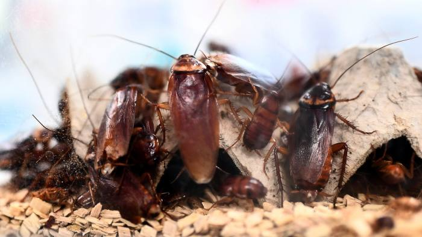

The first time I've ever had something published with the graphic being a cockroach. And hopefully not the last. From the FT.Bob Sleeper (Letters, June 15) is concerned that if central banks embraced competitive neutrality and extended to us all the utility banking they provide commercial banks, that would leave high-risk loans to the private sector. For me that’s a feature, not a bug.
He claims it would make the system more crisis prone. Why? Currently bank depositors are forced to cross subsidise both low- and high-risk lending. Central bank lending against super-collateralised mortgages (at no more than 60 per cent of the value of mortgages) would slash the resource cost of low-risk lending.
It effectively transfers it from the financial system, in which each link in the supply chain does “due diligence” on the previous one, to the monetary system which is adapted to minimise transactions costs. High-risk debt would then be (properly) repriced — with a little more “due diligence” going on. Borrowers would substitute towards more equity funding and lower spending.
There would still be the usual mistakes and herd behaviour, but it would be on a smaller scale and with lower leverage against collateral. And the central bank payments system would survive any crisis, just as we are told cockroaches will survive a nuclear winter.
That removes one central driver of bailouts. So wouldn’t asset bubbles, and the crises to which they can lead, be rarer? And milder? If existing prudential regulation of systematically important players — banks, insurers and pension funds — works now, it would work in this new world.
If it’s defective, we should fix what we can. And to the extent that we can’t, there would be less to go wrong, not more.
Nicholas Gruen Port Melbourne, VIC,
Australia Visiting Professor, King’s College London Policy Institute
Hi, I have a question. As I understand it, consumer deposits will be held by the central bank, and in exchange, the CB will make long term loans to commercial banks. Is this your expectation? Or do u think commercial bank liabilities will shrink substantially, and so lending will also shrink?
If the CB lends to commercial banks, then in effect the CB assumes the risk previously faced by depositors although with deposit insurance, that risk is not high.
If instead commercial bank liabilities shrink substantially, wouldn’t lending also shrink? Or perhaps would the CB itself buy mortgages and other securities?
Could u give us your thoughts on these questions?
I assume that the “financial system” must somehow convert consumer deposits into mortgages (home loans). At present, this conversion is done by commercial banks. If deposits are held by the CB, then either the CB must itself provide home loans, or buy mortgages, or lend to commercial banks.
Further, the corporate sector’s liquidity requirements needs funding from non-corporate sources. Jean Tirole argues that unless corporate sector defaults are uncorrelated (or negatively corrrelated), the corporate sector as a whole cannot come up with sufficient liquidity. The liquidity has to come from outside the corporate sector.
Again, please do give us your thoughts on these matters!
Thanks for your questions and apologies for my tardiness in responding. I've been travelling and pontificating.
Different people might provide different responses to your questions, but so as not to duck your search for me to be specific about my intended model let me elaborate.
Under what I'm proposing, I see the central bank provision of utility banking and the commercial banking system as essentially separate – though the central bank continues to provide the services it provides now to commercial banks.
So the central bank would receive all call deposits from citizens and businesses and would lend against collateral as proposed. This would reduce the extent to which commercial banks would receive deposits. So they'd need to work harder to raise deposits and these would be seen as higher risk than deposits with the central bank. So the interest rate they'd offer would generally have to be higher to raise the funds. They will also continue to raise funds on wholesale lending and equity markets though again the price they may have to pay to access it may rise.
This would also drive up the cost of home lending above the 60%) super-collateralised level at which the central bank is prepared to lend. The upshot is that two implicit subsidies are removed. One is the subsidy implicit in requiring people to use bank credit as money – which they must do if they wish to avail themselves of the convenience of cheque or online payments. The second is the cross-subsidy from the minimal risk on super-collateralised lending to riskier lending as margins on super-collateralised lending would be forced down by the central bank's offering.
This leads to the prediction in my letter which is that the extent of borrowing from commercial banks falls in favour of some mix of increased equity funding and lower spending.
To the extent that lending falls, some of that lending is likely to have been welfare enhancing. I'm thinking of cash flow lending where the activity thus enabled might not occur otherwise this is the case for the Act that set up the Federal Reserve calls an 'elastic' money supply. However only a small fraction of commercial bank lending funds business cash flow as opposed to being collateralised. About ten percent. It may be that it makes sense to subsidise this directly. If so, some small change from the revenue raised by my proposed arrangements could fund this at much lower cost than the hugely inefficient means we have at present which is to force everyone to pretend that the commercial bank deposit and payments system is risk free.
It's much less clear that commercial lending against collateral has beneficial welfare effects. True, it can help fund the purchase of assets earlier in people's lifetimes, getting them into a home of their own in their thirties rather than their forties for instance. On the other hand it funds an arms race which inflates the price of assets and this increasingly financialises those assets and so the owners of assets find themselves increasingly paying for expensive financial intermediation to be able to purchase increasingly high priced assets.
Hi, thank you for replying and answering my queries!
Your proposal for the public to have the same access to central banking facilities as the access that commercial banks enjoy is admirably egalitarian.
It occurs to me that if such public access to central bank facilities could be supplied over the mobile network, it could be a way to extend banking services to rural/remote areas of countries such as Papua New Guinea.
I hope you succeed in persuading a central bank to take up your proposal!
Thanks Kien,
I long ago gave up trying to persuade large organisations of the merits of substantially changing what they do. The RBA remains largely comatose on the issue – occasionally tossing off some lines about avoiding disruption. But the ideas have begun having some impact. Perhaps after the next financial crisis they'll get a little more cache.
Ha, ha. It seems even Ben Bernanke (the academic) didn't have much success with Ben Bernanke (the central banker). The central banker ignored the academic's advice to the central bank of Japan!
Paul Krugman commented in 2015 (https://krugman.blogs.nytimes.com/2015/01/22/insiders-outsiders-and-u-s-monetary-policy/) on an apparent split between "insiders" and "outsiders" over their respective interpretation of the risk of hiking interest rates too soon. And speculates it may have something to do with "incestuous amplification".
If you ever find yourself on the board of the RBA, beware!
I would beware (though I know everyone says that and I would say that wouldn't I), but for that reason I think it's unlikely I'll find myself on the Bank board :)